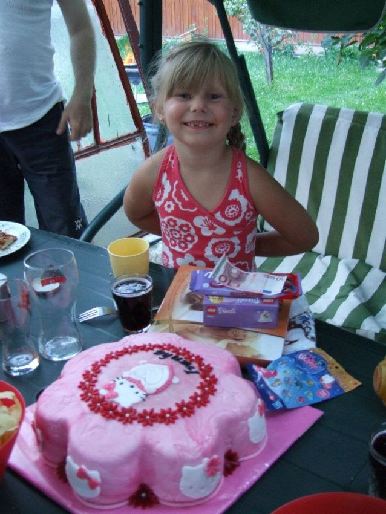

Tu sa dozviete niečo o mne
O Mne
Pochádzam z Liptovského Mikuláša. Na konci leta 2023 sme sa presťahovali do Malinova.
Už je to skoro rok ako som prestúpila na gymnázium do Modry. Predtým som chodila na bilingválne gymnázium do Ružomberka.
Mám 17 rokov a narodená som 4.Augusta 2006.
Mám staršieho brata. Volá sa Peter a je o 5 rokov starší ako ja. Už od veľmi skorého veku sme boli nerozdeliteľný a stále sme nerozdeliteľný. Všetci v rodine sme veľmi zamilovaný do motoriek. Môj otec aj jednu vlastní. Radi spolu chodíme na výlety.
Fotky mňa a mojej rodiny
